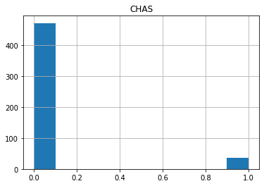
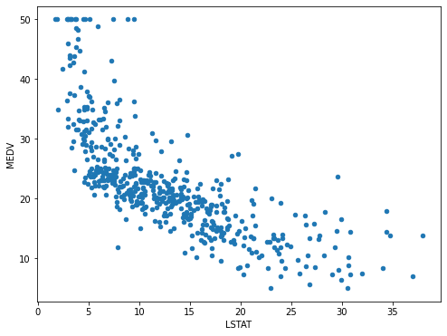

EDA
Basic Functions
Example of exploratory data analysis using the Boston Housing Dataset
Shape and Columns
from sklearn.datasets import load_boston
boston_dataset = load_boston()
import pandas as pd
boston = pd.DataFrame(boston_dataset.data,
columns=boston_dataset.feature_names)
boston['MEDV'] = boston_dataset.target
print(boston.shape)
#There are 506 records, and 14 columns including 13 features and the target.
print(boston.columns)
(506, 14)
Index(['CRIM', 'ZN', 'INDUS', 'CHAS', 'NOX', 'RM', 'AGE', 'DIS', 'RAD', 'TAX',
'PTRATIO', 'B', 'LSTAT', 'MEDV'],
dtype='object')
Head and Tail
boston[['CHAS','RM','AGE','RAD','MEDV']].head()
CHAS RM AGE RAD MEDV
0 0.0 6.575 65.2 1.0 24.0
1 0.0 6.421 78.9 2.0 21.6
2 0.0 7.185 61.1 2.0 34.7
3 0.0 6.998 45.8 3.0 33.4
4 0.0 7.147 54.2 3.0 36.2
Describe
#To check the summary statistics of the dataset (round to the second decimal place for better display)
boston.describe().round(2)
| CRIM | ZN | INDUS | CHAS | NOX | RM | AGE | DIS | RAD | TAX | PTRATIO | B | LSTAT | MEDV | |
|---|---|---|---|---|---|---|---|---|---|---|---|---|---|---|
| count | 506.00 | 506.00 | 506.00 | 506.00 | 506.00 | 506.00 | 506.00 | 506.00 | 506.00 | 506.00 | 506.00 | 506.00 | 506.00 | 506.00 |
| mean | 3.61 | 11.36 | 11.14 | 0.07 | 0.55 | 6.28 | 68.57 | 3.80 | 9.55 | 408.24 | 18.46 | 356.67 | 12.65 | 22.53 |
| std | 8.60 | 23.32 | 6.86 | 0.25 | 0.12 | 0.70 | 28.15 | 2.11 | 8.71 | 168.54 | 2.16 | 91.29 | 7.14 | 9.20 |
| min | 0.01 | 0.00 | 0.46 | 0.00 | 0.38 | 3.56 | 2.90 | 1.13 | 1.00 | 187.00 | 12.60 | 0.32 | 1.73 | 5.00 |
| 25% | 0.08 | 0.00 | 5.19 | 0.00 | 0.45 | 5.89 | 45.02 | 2.10 | 4.00 | 279.00 | 17.40 | 375.38 | 6.95 | 17.02 |
| 50% | 0.26 | 0.00 | 9.69 | 0.00 | 0.54 | 6.21 | 77.50 | 3.21 | 5.00 | 330.00 | 19.05 | 391.44 | 11.36 | 21.20 |
| 75% | 3.68 | 12.50 | 18.10 | 0.00 | 0.62 | 6.62 | 94.07 | 5.19 | 24.00 | 666.00 | 20.20 | 396.22 | 16.96 | 25.00 |
| max | 88.98 | 100.00 | 27.74 | 1.00 | 0.87 | 8.78 | 100.00 | 12.13 | 24.00 | 711.00 | 22.00 | 396.90 | 37.97 | 50.00 |
Plot
Hist
import matplotlib.pyplot as plt
boston.hist(column='CHAS')
plt.show()

boston.hist(column='RM',bins=20)
plt.show()

The distribution of RM appears normal and symmetric. The symmetry aligns with what we observed from the output of describe(), as the mean of RM 6.28 is close to its median 6.21.
Scatter
We specify the type of the plot by passing a string ‘scatter’ to the argument kind, identify the labels for x and y respectively, and set the size of the figure via a tuple (width, height) in inches.
boston.plot(kind='scatter',
x= 'RM',
y = 'MEDV',
figsize=(8,6));

boston.plot(kind='scatter',
x= 'LSTAT',
y = 'MEDV',
figsize=(8,6));

Correlation Matrix
To understand the relationship among features (columns), a correlation matrix is very useful in the exploratory data analysis. Correlation measures linear relationships between variables.
corr_matrix=boston.corr().round(2)
print(corr_matrix)
CRIM ZN INDUS CHAS NOX ... TAX PTRATIO B LSTAT MEDV
CRIM 1.00 -0.20 0.41 -0.06 0.42 ... 0.58 0.29 -0.39 0.46 -0.39
ZN -0.20 1.00 -0.53 -0.04 -0.52 ... -0.31 -0.39 0.18 -0.41 0.36
INDUS 0.41 -0.53 1.00 0.06 0.76 ... 0.72 0.38 -0.36 0.60 -0.48
CHAS -0.06 -0.04 0.06 1.00 0.09 ... -0.04 -0.12 0.05 -0.05 0.18
NOX 0.42 -0.52 0.76 0.09 1.00 ... 0.67 0.19 -0.38 0.59 -0.43
RM -0.22 0.31 -0.39 0.09 -0.30 ... -0.29 -0.36 0.13 -0.61 0.70
AGE 0.35 -0.57 0.64 0.09 0.73 ... 0.51 0.26 -0.27 0.60 -0.38
DIS -0.38 0.66 -0.71 -0.10 -0.77 ... -0.53 -0.23 0.29 -0.50 0.25
RAD 0.63 -0.31 0.60 -0.01 0.61 ... 0.91 0.46 -0.44 0.49 -0.38
TAX 0.58 -0.31 0.72 -0.04 0.67 ... 1.00 0.46 -0.44 0.54 -0.47
PTRATIO 0.29 -0.39 0.38 -0.12 0.19 ... 0.46 1.00 -0.18 0.37 -0.51
B -0.39 0.18 -0.36 0.05 -0.38 ... -0.44 -0.18 1.00 -0.37 0.33
LSTAT 0.46 -0.41 0.60 -0.05 0.59 ... 0.54 0.37 -0.37 1.00 -0.74
MEDV -0.39 0.36 -0.48 0.18 -0.43 ... -0.47 -0.51 0.33 -0.74 1.00
[14 rows x 14 columns]